Engineering · Electronics · Step 7 of the electricity path
Electronic Schematics
A schematic is the map of a circuit. It throws away color, size, and where the parts sit, and keeps the one thing that matters: what connects to what. Learn to read the map, then use it to find a fault and rebuild a circuit in real life or Tinkercad, then explain how it works.
SW1 open. The loop is broken, so I = 0 mA. D1 is dark.
TitlePocket light
Dwg no.ES-07
RevB
Sheet1 / 1
Build
Schematic library
Browse 14 circuits. Open a card for the full drawing, parts, code, and tests. Tap the full drawing to enlarge it.
Grade bands are suggested starting points; choose with your teacher based on experience.
14 projects shown
Choose a project to begin your assignment plan.
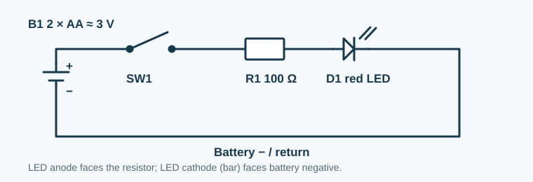
Pocket light for a power outage
StarterGrades 6–8Professional: Technicians use this loop to understand indicator lights and trace a loss of power.Hobbyist: Build a battery lantern or model flashlight while learning switches, LED polarity, and current limiting.View schematic & build instructions
A switch makes a small red LED light only when you need it. Every part sits in the same current path.
Trace B1 positive → SW1 → R1 → D1 anode → D1 cathode → B1 negative. The LED's bar is the cathode.Connection list: translate this drawing into nodes
B1+ → SW1 → R1 (100 Ω) → D1 anode. D1 cathode → B1−. For a Tinkercad DC source, set 3 V; do not substitute 9 V without recalculating R1.
Predict: What if the LED is turned around?
It stays dark because an LED conducts in only one direction. Turn power off, reverse it, then retest.
Gather
Two AA cells in a holder, red LED, 100 Ω resistor, switch, wires.
Red LED forward voltage is about 2 V; (3 − 2) ÷ 100 ≈ 0.01 A, or 10 mA.
Check it
Open the switch: dark. Close it: lit. If dark both ways, check battery polarity, LED polarity, and each junction.
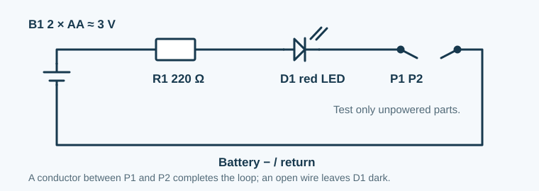
Find a broken wire
StarterGrades 6–8Professional: Repair technicians check continuity to find broken wires and poor connections.Hobbyist: Check an unpowered jumper or homemade cable while learning how a complete path differs from an open circuit.View schematic & build instructions
Turn the pocket light into a continuity checker. The two probes replace the switch; a good wire closes the gap.
Touch P1 to P2: the LED should light. Put the probes at opposite ends of an unpowered wire: light means there is a conducting path.Connection list: translate this drawing into nodes
B1+ → R1 (220 Ω) → D1 anode. D1 cathode → P1. P2 → B1−. Join P1 and P2 through the unpowered wire being tested. Use a 3 V supply.
Predict: What does a dark LED prove?
Only that this tester did not detect a low-resistance path. First touch the probes together to confirm the battery and LED work; then retest the wire.
Gather
Two AA cells, red LED, 220 Ω resistor, two insulated probe leads, wires.
Use only on completely unpowered loose wires and switches. Never connect this tester to an outlet or a powered circuit.
Check it
Touch the probes together, then separate them. Compare a known good wire with a visibly broken one. This simple LED tester cannot measure resistance accurately.
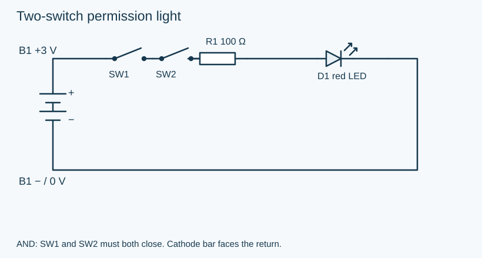
Two-switch permission light
StarterGrades 6–8Professional: Engineers use AND logic when two conditions must both be true before an output activates.Hobbyist: Make a two-player permission light and learn series switching, a principle behind more complex interlock systems.View schematic & build instructions
The LED lights only when both switches are closed. Model two people giving permission for a classroom display.
AND: SW1 and SW2 must both close. Cathode bar faces the return. Match the designators to your build before applying power.Connection list: what shares a node?
Two AA cells (3 V), two switches, one red LED, one 100 Ω resistor, breadboard and wires.
Required tests
Try all four combinations: open/open, open/closed, closed/open, closed/closed. Only the last lights D1. Expect about 10 mA when lit.
Make it your own
Turn it into a two-person voting light; explain why moving a switch elsewhere in the series loop keeps the same logic.
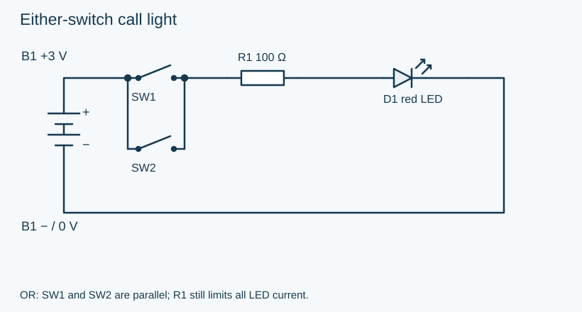
Either-switch call light
StarterGrades 6–8Professional: Control designers use OR logic when either input should request the same action.Hobbyist: Make a model call light for two desks and learn how parallel switches let either location activate one output.View schematic & build instructions
Either button can complete the circuit. Make a call light that can be operated from two desks.
OR: SW1 and SW2 are parallel; R1 still limits all LED current. Match the designators to your build before applying power.Connection list: what shares a node?
B1+ shares a node with both switch inputs. Both switch outputs share a node with R1. R1 → D1 anode; D1 cathode → B1−.
Parts and power
Two AA cells (3 V), two switches, red LED, 100 Ω resistor, breadboard and wires.
Required tests
Record all four switch combinations. D1 is dark only when both switches are open. Closing both should not double brightness.
Make it your own
Compare this with the AND circuit; draw which two wires you moved.
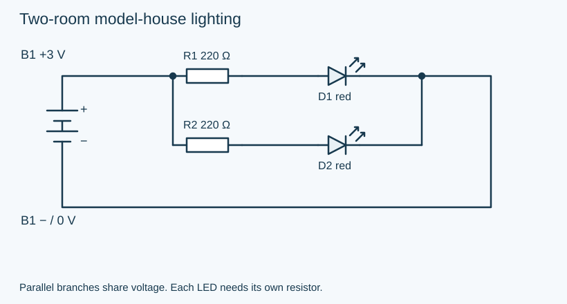
Two-room model-house lighting
StarterGrades 6–8Professional: Electronics designers use parallel branches to power independent loads from a shared supply.Hobbyist: Light separate rooms in a model house and learn why each LED needs its own resistor and one disconnected branch leaves the other working.View schematic & build instructions
Two independent branches light two rooms. Each LED gets its own current-limiting resistor.
Parallel branches share voltage. Each LED needs its own resistor. Match the designators to your build before applying power.Connection list: what shares a node?
B1+ → R1 → D1 anode and B1+ → R2 → D2 anode. Both LED cathodes → B1−. The branches share only supply and return.
Parts and power
Two AA cells (3 V), two red LEDs, two 220 Ω resistors, breadboard and wires.
Required tests
Both LEDs should light. Power off, disconnect one branch, then power on: the other stays lit. Predict about 4.5 mA per branch and 9 mA total.
Make it your own
Add a series switch to each branch to control rooms separately. Keep a resistor in every LED branch.
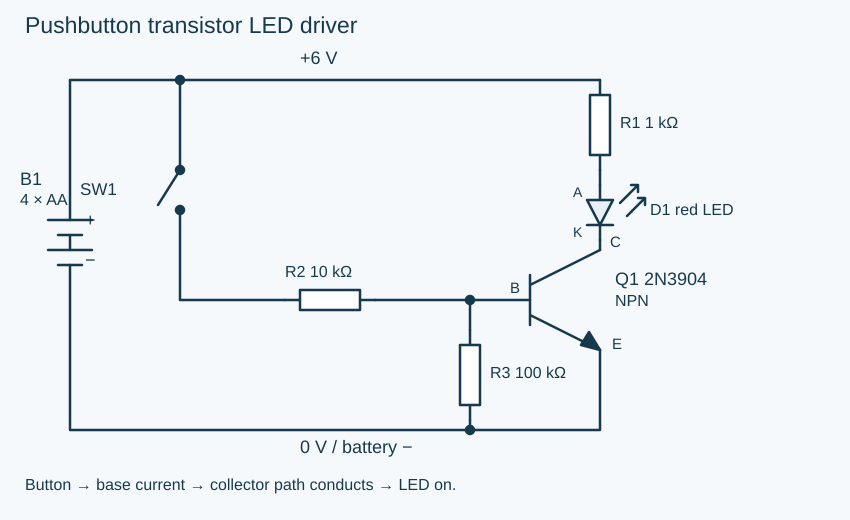
Pushbutton transistor LED driver
IntermediateGrades 8–10Professional: Electronics engineers use transistor drivers so a small control current can switch a load.Hobbyist: Make a pushbutton model-panel lamp and learn to separate the control path from the load path, a foundation for larger driver circuits.View schematic & build instructions
Start here: a small base current controls the LED current in a separate collector path.
Button → base current → collector path conducts → LED on. B = base, C = collector, E = emitter; A = LED anode, K = cathode. The physical lead order must come from your exact transistor's datasheet.Connection list: wire the same nodes
B1+ → R1 → D1 anode; D1 cathode → Q1 collector. Q1 emitter → B1−. B1+ → SW1 → R2 → Q1 base; R3 joins the base to B1−.
Explain the transistor's job
R2 limits base current; R3 holds the base low when the button opens. The button does not carry the LED current. At 6 V, base current is roughly (6 − 0.7) / 10,000 ≈ 0.53 mA before the small R3 current; saturated LED current is about (6 − 2 − 0.2) / 1,000 ≈ 3.8 mA. These are estimates, not exact transistor constants.
Parts and power
Four AA cells (6 V nominal) or a simulated 6 V DC source, one 2N3904 NPN transistor, one red LED, breadboard and wires. R1 = 1 kΩ, R2 = 10 kΩ, R3 = 100 kΩ, normally open pushbutton.
Three required tests
Released: LED off. Pressed: LED on. With the button held, measure collector-to-emitter voltage: it should drop from near 6 V to a few tenths of a volt when Q1 saturates.
Make it your own
Build a model control-panel lamp; explain why R2 and R1 limit different currents.
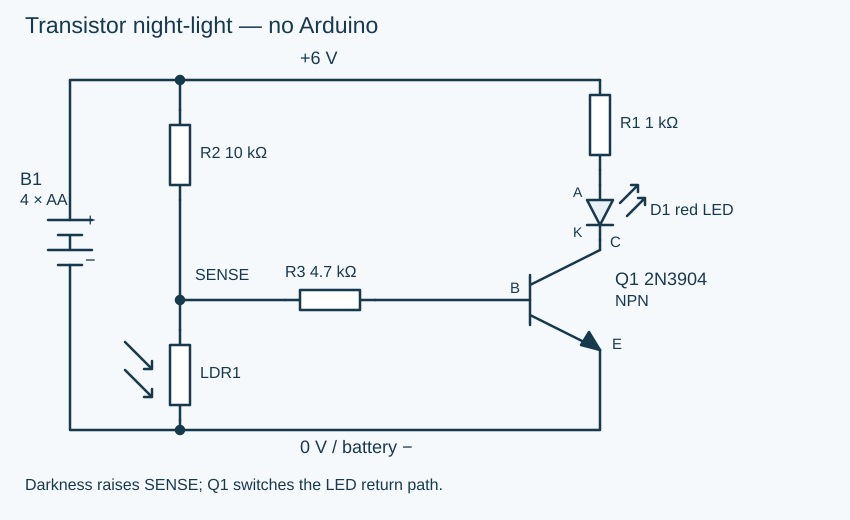
Transistor night-light — no Arduino
IntermediateGrades 8–10Professional: Analog designers combine sensor dividers and transistor switches to respond to changing light.Hobbyist: Build a code-free model night-light and learn how sensor resistance becomes a control voltage, including why component values affect sensitivity.View schematic & build instructions
Cover the photoresistor and the LED turns on. Build a miniature porch light or bedroom night-light.
Darkness raises SENSE; Q1 switches the LED return path. B = base, C = collector, E = emitter; A = LED anode, K = cathode. The physical lead order must come from your exact transistor's datasheet.Connection list: wire the same nodes
In bright light, the LDR has low resistance and pulls SENSE toward 0 V. In darkness, its resistance rises; R2 supplies current through R3 into the base. Q1 conducts and lights D1. R3 limits base current. The sensor divider is loaded by the base, so the unloaded divider equation is only a starting estimate. This circuit has a gradual transition, not a precise light threshold.
Parts and power
Four AA cells (6 V nominal) or a simulated 6 V DC source, one 2N3904 NPN transistor, one red LED, breadboard and wires. Photoresistor LDR1, R1 = 1 kΩ, R2 = 10 kΩ, R3 = 4.7 kΩ.
Three required tests
Bright light: aim for LED off. Covered LDR: LED on. Measure SENSE relative to B1− in both states: it rises in darkness. Record actual readings and any partial brightness near the transition.
Make it your own
Make a light-blocking shade and housing. Keep the LED from shining directly onto the LDR. Tune sensitivity as described below, then record the resistor value you chose.
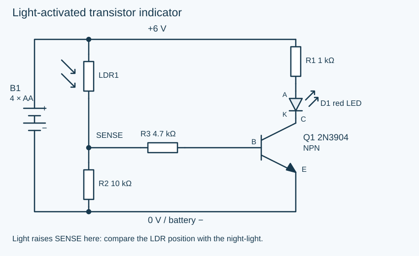
Light-activated transistor indicator
IntermediateGrades 8–10Professional: Instrumentation designers turn changes in light into electrical signals for indicators and monitoring.Hobbyist: Make a sunlight indicator for a model greenhouse and learn how a sensor divider turns increasing light into transistor conduction.View schematic & build instructions
Swap the two sensor-divider components to make a light detector: the LED responds to illumination.
Light raises SENSE here: compare the LDR position with the night-light. B = base, C = collector, E = emitter; A = LED anode, K = cathode. The physical lead order must come from your exact transistor's datasheet.Connection list: wire the same nodes
Illumination lowers the upper LDR resistance, raising SENSE and supplying base current. Covering the LDR lowers SENSE. Q1 and the LED current path are unchanged; only the sensor-divider arrangement changed. Actual brightness and switching depend on the LDR and the transistor.
Parts and power
Four AA cells (6 V nominal) or a simulated 6 V DC source, one 2N3904 NPN transistor, one red LED, breadboard and wires. Photoresistor LDR1, R1 = 1 kΩ, R2 = 10 kΩ, R3 = 4.7 kΩ.
Three required tests
Covered LDR: aim for LED off. Brightly illuminated LDR: LED on. Measure SENSE in both states; compare the direction of change with the night-light.
Make it your own
Make a model beam detector: a lamp illuminates the sensor; a card breaks the beam. Explain which state counts as an interruption.
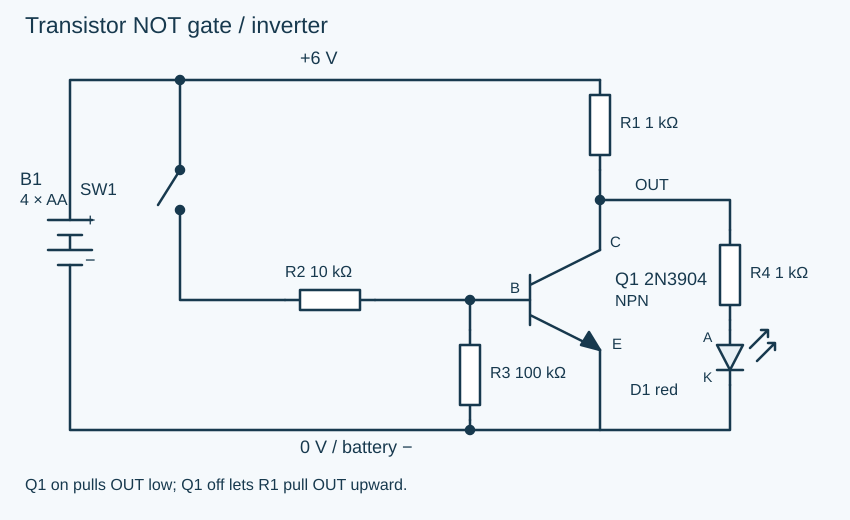
Transistor NOT gate / inverter
IntermediateGrades 8–10Professional: Digital designers use inversion when an output must reverse an input state.Hobbyist: Make a model indicator that goes dark when its button is pressed and learn NOT logic and how a transistor pulls a node toward ground.View schematic & build instructions
The output indicator lights when the button is released and goes dark when you press it.
Q1 on pulls OUT low; Q1 off lets R1 pull OUT upward. B = base, C = collector, E = emitter; A = LED anode, K = cathode. The physical lead order must come from your exact transistor's datasheet.Connection list: wire the same nodes
B1+ → R1 → OUT. OUT → Q1 collector and R4. R4 → D1 anode; D1 cathode → B1−. Q1 emitter → B1−. B1+ → SW1 → R2 → Q1 base; R3 joins base to B1−.
Explain the transistor's job
When Q1 is off, current travels through R1, R4 and D1. The LED loads the output, so OUT is below 6 V (roughly 4 V for a 2 V red LED). When Q1 turns on, it pulls OUT near ground, leaving too little voltage to light D1. R1 limits the collector current: pressing the button must never short the supply directly. This is a learning inverter, not a guaranteed interface to a particular logic-chip family.
Parts and power
Four AA cells (6 V nominal) or a simulated 6 V DC source, one 2N3904 NPN transistor, one red LED, breadboard and wires. R1 = 1 kΩ pull-up, R2 = 10 kΩ base resistor, R3 = 100 kΩ base pull-down, R4 = 1 kΩ LED resistor, normally open pushbutton.
Three required tests
Released: LED on, OUT roughly 4 V with a red LED. Pressed: LED off, OUT near 0 V. Measure OUT in both states and draw a two-row input/output truth table.
Make it your own
Create an “all clear” indicator that turns off when its input button is pressed; label input HIGH/output LOW and input LOW/output HIGH.
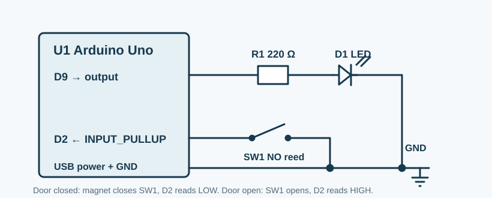
Remind us when a cabinet door stays open
CodingGrades 9–12Professional: Embedded engineers combine switches and timers to report when equipment is left open.Hobbyist: Prototype a cabinet-door reminder and learn digital inputs, pull-ups, and elapsed-time logic that avoids alerting on every brief opening.View schematic & build instructions
A normally open reed switch closes when its magnet is next to it. Mount the magnet on the door so the switch is closed when the door is shut. An Arduino waits 10 seconds before lighting the reminder LED.
Door shut: SW1 connects D2 to GND, so INPUT_PULLUP reads LOW. Door open: the magnet leaves, SW1 opens, and D2 reads HIGH.Connection list: translate this drawing into nodes
Uno D2 → SW1 → GND. D9 → R1 (220 Ω) → D1 anode; D1 cathode → GND. Power the Uno by USB. A pushbutton may stand in for SW1 during simulation: pressed means door shut.
Predict: What happens if the reed wire breaks?
D2 reads HIGH, the same as an open door. The reminder lights after 10 seconds. This is a useful fail-aware behavior, though it cannot tell a broken wire from an open door.
Gather
USB-powered Arduino Uno, normally open reed switch and magnet, red LED, 220 Ω resistor.
Connect the LED anode to R1 and its cathode to GND. The Uno's internal pull-up supplies the D2 bias.
Test
Hold the magnet near SW1: LED off. Move it away for 10 seconds: LED on. Return it: LED off immediately.
CodingGrades 9–12Professional: Embedded designers read knobs and use PWM to control indicator brightness.Hobbyist: Make a miniature reading light with a brightness dial and learn how an analog input becomes a changing duty cycle at a digital output.View schematic & build instructions
A potentiometer supplies an analog input; the Uno changes LED brightness using pulse-width modulation.
RV1 is an input voltage divider. D9 is PWM, not a steady analog voltage. Match the designators to your build before applying power.Connection list: what shares a node?
CodingGrades 9–12Professional: Automation programmers sequence outputs to communicate stages of a process.Hobbyist: Build a model signal tower or activity timer and learn output timing, shared ground, and a separate resistor for each LED.View schematic & build instructions
Three LEDs announce stop, wait, and go in sequence. Build a miniature crossing signal or a classroom activity timer.
Three outputs, three resistors, one shared ground return. Match the designators to your build before applying power.Connection list: what shares a node?
D8 → R1 → STOP LED anode; D9 → R2 → WAIT LED anode; D10 → R3 → GO LED anode. All cathodes → GND.
Parts and power
USB-powered Uno, three red LEDs (label STOP / WAIT / GO), three 330 Ω resistors.
Required tests
Check STOP alone for 3 s, WAIT alone for 1 s, GO alone for 3 s; repeat. Verify only one LED lights at a time.
Make it your own
Use colored LEDs and labels, or change durations and explain the new timing. This model is not for controlling real traffic.
Arduino Uno sketch
const byte pins[] = {8, 9, 10};
const unsigned long times[] = {3000, 1000, 3000};
void setup() {
for (byte i = 0; i < 3; i++) pinMode(pins[i], OUTPUT);
}
void loop() {
for (byte i = 0; i < 3; i++) {
digitalWrite(pins[i], HIGH);
delay(times[i]);
digitalWrite(pins[i], LOW);
}
}
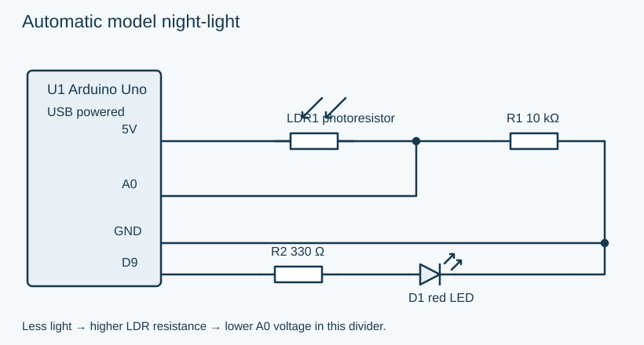
Automatic model night-light
CodingGrades 9–12Professional: Embedded engineers measure sensors and choose thresholds to automate responses.Hobbyist: Make a model porch light and learn to calibrate bright and dark readings, then convert an analog measurement into an on/off decision.View schematic & build instructions
A light-dependent resistor and a fixed resistor form a sensor divider. The Uno turns on an LED in darkness.
Less light → higher LDR resistance → lower A0 voltage in this divider. Match the designators to your build before applying power.Connection list: what shares a node?
Compare bright and covered sensor readings in Serial Monitor. Covering LDR1 should lower A0; choose a threshold between your two readings and retest.
Make it your own
Make a model porch light. Explain why swapping LDR1 and R1 reverses the voltage response.
Arduino Uno sketch
const int threshold = 500; // Adjust between your bright and dark readings.
void setup() { pinMode(9, OUTPUT); Serial.begin(9600); }
void loop() {
int light = analogRead(A0);
Serial.println(light);
digitalWrite(9, light < threshold ? HIGH : LOW);
delay(100);
}
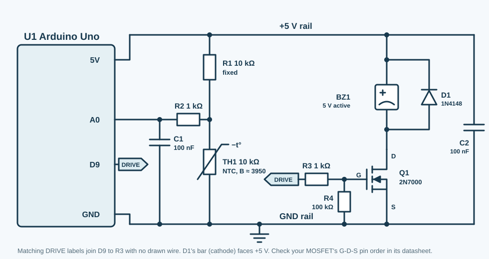
Warn when a storage box gets too hot
AdvancedGrades 10–12Professional: Instrumentation engineers turn temperature-dependent resistance into measurements and alarm decisions.Hobbyist: Prototype a warm-storage-box indicator and learn thermistor conversion, calibration, hysteresis, and a transistor output stage before tackling practical monitoring projects.View schematic & build instructions
A 10 kΩ NTC thermistor makes a temperature-dependent voltage divider. The Arduino filters the measurement, checks for a disconnected sensor, and uses two thresholds so the buzzer does not chatter at the limit. This is a learning instrument, not a certified fire or medical alarm.
R1 and TH1 form the sensor divider. R2/C1 filter A0. Matching DRIVE labels connect D9 to R3. Q1 switches the buzzer; R4 holds its gate low at startup. D1 handles inductive kick.Connection list: translate this drawing into nodes
It falls. A warmer NTC has less resistance, so the lower half of this divider takes a smaller share of the 5 V supply. At 25 °C, two 10 kΩ halves place A0 near 2.5 V.
Gather
USB-powered Uno; 10 kΩ NTC (B ≈ 3950 K); 10 kΩ, two 1 kΩ, and 100 kΩ resistors; two 100 nF ceramic capacitors.
2N7000 N-channel MOSFET; 5 V active buzzer drawing at most 30 mA; 1N4148 or 1N400x diode.
Verify
Measure A0 near 2.5 V at 25 °C; warm TH1 gently and watch A0 fall. Alarm at 35 °C; clear below 32 °C. Unplug TH1 to test the fault state. Confirm the MOSFET's G, D, S pin order from your exact part datasheet.
Show calculation and reliability notes
For the 10 kΩ upper resistor and NTC lower resistor, RNTC = 10,000 × ADC ÷ (1023 − ADC). Convert resistance with the thermistor's own beta value: T(K) = 1 ÷ (1/298.15 + ln(RNTC/10,000)/B). Subtract 273.15 for °C. Reject ADC readings near either rail as possible wiring faults. Average several readings, alert at 35 °C, and clear at 32 °C. Log time, raw ADC, calculated temperature, and alarm state over Serial; compare with a known thermometer and calibrate before using it for decisions. C2 (100 nF) sits across 5 V and GND next to the buzzer driver, where it soaks up switching spikes. Place D1 across a magnetic buzzer with its cathode at +5 V and anode at Q1 drain.
Set the beta value to the number printed in your thermistor's datasheet. This code drives a low-current active buzzer through Q1; it does not generate a tone for a passive piezo.
Transistor build guide · reading and troubleshooting
No Arduino. No code. A sensor controls a transistor.
Four transistor builds to reconstruct
Start with the pushbutton driver, then build the night-light. An NPN transistor has three terminals: a small current into the base (B) allows a larger current through the collector (C) to the emitter (E). In these circuits, the emitter connects to battery negative. The base is a control terminal, not the LED's power source.
Trace the load path: supply → LED resistor → LED → collector → emitter → return.
Trace the control path into the base. Identify the base resistor and the component that changes the input.
Predict OFF and ON states. Around 0.6–0.8 V from base to emitter often accompanies conduction; this is an approximate operating region, not a precise trigger specification.
Verify B/C/E from your exact part datasheet. A schematic symbol's position is not a physical lead-order diagram. In Tinkercad, check terminal names on the part.
Night-light sensitivity: what if it stays on or stays off?
First verify 6 V supply, LED polarity, Q1 pinout, and the connection list. Compare bright and covered LDR resistance with power disconnected; your sensor may not match the assumed range. For the night-light, start with the shown 10 kΩ upper resistor. If it stays on in bright light, try 22 kΩ or 47 kΩ there; if it never turns on in darkness, try 4.7 kΩ. Keep the 4.7 kΩ base resistor and 1 kΩ LED resistor. Change one value with power off and record both test states. Aim for bright LDR resistance well below the upper resistor and dark resistance well above it. The loaded divider and transistor gain affect the actual transition.
All four drawings use a 6 V supply and a low-current red LED. Set a Tinkercad DC source to 6 V; in real life use four AA cells in a holder. Keep every resistor shown. The night-light is an analog sensor circuit with a gradual transition; it may partially light near the threshold.
Drawings created for ClassroomOS. Physical builds and Tinkercad simulations have not been bench-validated. Arduino input and PWM conventions: Arduino built-in examples and PWM guidance.
Below is the pocket light from the top of the page, drawn two ways. On the left, it looks the way it does on your bench: a battery holder, a slide switch, a striped resistor, an LED, and four tangled wires. On the right is the schematic. Tap any part in either drawing and its match lights up in the other.
Bench viewwhere things sitSchematicwhat connects
Pick a part. Notice what the schematic keeps and what it throws away.
Photos hide connections
Two circuits can look completely different on the bench and be electrically identical. The schematic shows that; a photo hides it.
One language, everywhere
Symbols follow international standards (IEC and IEEE/ANSI). An engineer in Japan and one in Brazil read the same drawing the same way.
Schematic first, board second
A schematic shows logical connections. A circuit-board layout shows physical placement. Engineers draw the schematic first and generate the layout from it.
Drawing conventionMost schematics put positive supply near the top and ground near the bottom, so current seems to flow left to right and top to bottom. That is a habit that makes drawings easier to read, not a law of physics.
Translate
Real parts become symbols
Electronic parts have bodies, colors, stripes, legs, flat sides, and labels. A schematic ignores most of that. It keeps the electrical identity: what the part does, which pins matter, and which way it must face. Find the terminals on the real part, then match them to the symbol.
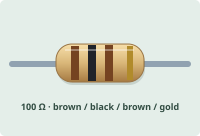
Physical partBrown-black-brown gives 100 ohms; the spaced gold band marks ±5% tolerance. The two metal leads connect it in series.
Schematic
Resistor
In real life it is often a tiny cylinder with colored bands or a flat surface-mount rectangle. In a schematic it becomes a zigzag or rectangle because only resistance matters.
Reading clue: the label usually starts with R, like R1 or R12, and the value is in ohms.
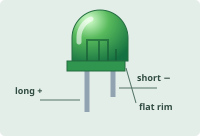
Physical partThe longer lead is the anode (+). The shorter lead and flat edge of the rim mark the cathode (−). Check polarity before connecting an LED.
Schematic
LED
The physical LED has polarity: the longer leg is usually the anode and the flat side marks the cathode. The schematic uses a diode symbol plus arrows for light.
Reading clue: the bar side is the cathode. LEDs almost always need a resistor in series.
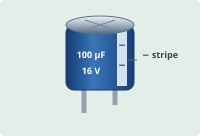
Physical partAn electrolytic capacitor has a metal can and a sleeve. The stripe marks the negative lead; 100 µF is capacitance and 16 V is its voltage rating.
Schematic
Capacitor
A ceramic capacitor may look like a tiny disk or rectangle. An electrolytic capacitor looks like a small can and has polarity. The schematic shows plates because it stores charge between conductors.
Reading clue: C labels are capacitors. A + mark or curved plate means polarity matters.
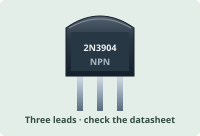
Physical partThe flat face carries the part number. Three leads connect the emitter, base, and collector; their order depends on the exact part and package.
Schematic
Transistor
A transistor may be a three-legged black package or a tiny surface-mount part. The schematic must name the pins because the order changes between packages.
Reading clue: Q labels are transistors. For NPN, the emitter arrow points out.
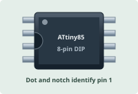
Physical partThe ATtiny85 in an 8-pin DIP package has four pins per side. Use the notch and dot to orient pin 1, then use the datasheet to identify each pin.
Schematic
Integrated Circuit
A real chip has a notch or dot for pin 1. In a schematic, the chip becomes a rectangle with named pins. The drawing may rearrange pins so signals are easier to read.
Reading clue: U labels are ICs. Trust pin names and numbers, not the physical side of the symbol.
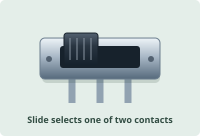
Physical partThis three-terminal slide switch connects the center terminal to one outer terminal at a time. Use the center and one outer terminal for simple on/off control.
Schematic
Switch
A switch can be a slide, toggle, key, relay contact, or pushbutton. The schematic only shows whether contacts are open, closed, momentary, or connected to multiple throws.
Reading clue: SW labels are switches. Open contacts mean the circuit path is broken until the switch changes state.
Translation ruleA symbol is not a drawing of a part's body. It is a drawing of what the part does. Identify terminals first, then polarity, then the label and value. Parts that must face one way are polarized: LEDs, electrolytic capacitors, diodes, and chips.
Vocabulary
The symbol library
Every symbol carries a reference designator letter: R for resistors, C for capacitors, D for diodes, Q for transistors, U for chips, SW for switches. Browse the four families, then test yourself in the drill.
Many schematics don't draw the full wire back to the battery. They use shorthand symbols that mean "this connects to the positive supply" or "this connects to ground."
VCC / VDDPositive supply voltage. Any component connected to this symbol shares the same positive rail.+V · Power
Ground (GND)The reference voltage — 0V. Current flows into ground to complete the circuit.0V · Return
Chassis GroundEarth or chassis connection — the physical metal frame of an enclosure, for safety bonding.Earth · Safety
Battery / CellA DC voltage source. Long line = positive terminal, short line = negative. Multiple pairs = multiple cells.DC · Volts
Voltage SourceAn ideal DC source maintaining a fixed voltage — used to represent power supplies in a schematic.DC · Source
Passive parts don't amplify or switch on their own. They limit, store, or release energy, and they are the foundation of every circuit.
Resistor (ANSI)Limits current flow. The zigzag is the US/ANSI standard symbol.Ohms (Ω)
Resistor (IEC)The rectangular box is the European/IEC standard. Same component, different symbol style.Ohms (Ω)
PotentiometerA variable resistor with a third terminal (the wiper) that slides along the resistance element.Variable Ω
CapacitorStores charge in an electric field. Two parallel plates separated by a gap — no DC current flows through it.Farads (F)
Capacitor (Polarised)An electrolytic capacitor — must be connected with + to the higher voltage. Reverse it and it can explode.Farads (F) · Polarised
Inductor / CoilStores energy in a magnetic field. Resists changes in current. Used in filters, power supplies, and transformers.Henrys (H)
Switch (SPST)Single-pole single-throw — the simplest on/off switch. Open = no current; closed = current flows.On / Off
Push Button (NO)Normally Open — contacts are apart by default; pressing bridges them. Used for momentary input.Momentary · NO
Semiconductors control current: one-way valves, light makers, and electrically controlled switches. Every arrow and bar tells you which way current is allowed to go.
DiodeAllows current in one direction only (anode → cathode). The triangle points in the direction of current flow; the bar is the cathode.One-way · 0.7V drop
LEDLight-Emitting Diode. Same as a diode but with light-emission arrows added to the symbol. Requires a current-limiting resistor.Light · ~2V drop
Zener DiodeAllows current in reverse at a precise voltage (the zener voltage). Used for voltage regulation and protection.Regulation · Vz
NPN TransistorA current-controlled switch or amplifier. Small base current controls large collector-to-emitter current. Arrow points outward on NPN.B · C · E
PNP TransistorLike NPN but opposite polarity. Arrow points inward on PNP — "Points iN Proudly" helps remember which is which.B · C · E
N-ch MOSFETVoltage-controlled switch. The gate voltage controls whether the drain-to-source channel conducts. Used in motor drivers and power switching.G · D · S
Op-AmpOperational Amplifier — a triangular symbol with + and − inputs and one output. Amplifies the voltage difference between its two inputs.+ · − · Out
Integrated Circuit (IC)Any chip is drawn as a rectangle with labeled pins on the sides. Pin names and numbers are always labeled — don't guess what connects where.Chip · Many pins
These marks aren't parts at all. They tell you which wires are joined, which aren't, and which pins are left empty on purpose.
Junction (Node)A filled dot where wires cross means they ARE connected. All wires meeting at a dot share the same electrical node.Connected
No Connection (crossing)When wires cross WITHOUT a dot, they do NOT connect. Some schematics use a small bridge/hop arc to make this extra clear.Not Connected
No-Connect (NC)An X or open circle on a pin means it is intentionally left unconnected — not an error, not forgotten. Often seen on IC pins that aren't used in a design.Intentionally NC
Net LabelA named flag on a wire. Any two nets with the same name are connected, even across different pages of the schematic.Named wire
Net labels: the invisible wireWhen the same label (VCC, 3V3, GND, SDA) appears in two places with no line joining them, those places are still connected. The label stands in for a wire that would otherwise cross the whole drawing.
A symbol appears here.
Symbol drill
Ten symbols, four choices each. Name each one before the class does.
Round 0/10Score 0Streak 0
The rules that trip everyone
Connected or not?
Misreading connections is the most common schematic mistake, even for professionals in a hurry. Three rules settle almost every case:
The dot rule. A filled junction dot means joined. Two wires that cross without a dot are not connected.
A T is a join. A wire that ends on another wire, making a T, is connected even if the dot is missing. Careful drafters still add the dot.
Names are wires. Two net labels with the same name are the same node, even on different pages. Repeated ground or +5 V symbols work the same way.
Judge the drawing
Is the blue wire electrically connected to the red wire?
Case 1/8Correct 0
No-connect marksAn X on a chip pin means "left empty on purpose." It is not a mistake. Don't wire it: on some chips an NC pin is joined to something sensitive inside.
Method
Read a schematic in seven moves
Here a pushbutton turns on an LED through an NPN transistor. That is how a tiny signal, from a button or an Arduino pin, controls a bigger load. Step through the method; each move lights up what you should be looking at.
Move
Find the power
Look for VCC, V+, +5 V, or a battery near the top or left edge. That is where current starts. Note the voltage.
Troubleshoot
Find the fault with a meter
A schematic is a list of predictions. Every node should sit at a voltage you can work out ahead of time. When a circuit fails, measure node by node and compare with the prediction. The fault is between the last good reading and the first bad one.
Each lettered circle is a test point. The meter's black probe stays on battery −. Tap a test point to touch the red probe there.
-.-- V
DC volts · red probe not placed
Case 1. SW1 is closed, but D1 stays dark.
Healthy prediction: A = 3.0 V, B = 3.0 V, C ≈ 2.0 V (LED anode), D = 0.0 V.
Which part failed?
Read like a hardware debugger
Professional reading goes beyond naming symbols. Split the drawing into blocks, match every designator to a real part, and predict what each important node should measure.
Named nets, arrows, buses, analog nodes, clock/data lines
Control
What turns each block on or changes its behavior?
Enable, reset, gate, base, select, and feedback connections
Protection
What limits damage when something goes wrong?
Fuses, series resistors, reverse-polarity diodes, clamps
Test
Where can expected values be verified?
Test points, connector pins, labeled nodes, stated waveforms
Make a measurement map
Mark the ground reference and every supply rail. Write the expected DC voltage beside each one.
Split the circuit into input, processing, driver, output, and power blocks.
Choose a test point at each block boundary and predict its idle and active state.
Check the datasheet pinout for every chip or transistor; never guess it from the package shape.
Power off: inspect orientation and continuity. Power on: verify rails before chasing signals.
Find the last known-good node and the first bad node. The fault usually lies between them.
Hidden connectionsRepeated ground symbols normally share one node, but labels such as AGND, DGND, or chassis ground may be kept separate on purpose and joined at one planned point.
Graded reconstruction · suggested rubric
From schematic to working circuit
Select one schematic from this lesson and rebuild its electrical connections in real life or in Tinkercad Circuits. Your layout can look different; the nodes, component values, polarity, and behavior must match. Choose a difficulty with your teacher. Every route uses the same evidence requirements.
Plan: name the circuit, state its job, list parts and values, label supply and return, and predict three test results before building.
Translate: write a connection list for each node. Map it to breadboard rows; check joined groups and split power rails. Mark LED anode/cathode and verify chip pinouts.
Reconstruct: wire with power off. Check against the diagram one connection at a time; add the supplied sketch for Arduino projects.
Test: record condition, predicted result, observed result, and explanation for at least three tests. Include an off/inactive state and an on/active state, plus a measurement or third condition.
Explain: trace the current path and input-to-output behavior. Describe one fault you found and fixed, or a safe power-off disconnection test and its result.
Real-life route
Use the stated battery voltage or USB-powered Uno. Disconnect power before rewiring; never use wall outlets. Include a clear overhead photo, labeled parts, and a demonstration or video showing your tests. Measure voltage with the meter in parallel; never place a current-mode meter straight across a supply.
Tinkercad route
Open Tinkercad Circuits, create a circuit, place the parts, set resistor values, and wire the matching nodes. For Uno projects, paste the sketch into the text code editor and start simulation. Capture your circuit and each test state; include a teacher-accessible project link or demonstrate it in class.
Check available parts before selecting a project. Use a pushbutton instead of the door project's reed switch to model open/closed states, and document the substitution. Choose the simpler builds if advanced parts are unavailable.
Test log — copy into your submission
Write predictions before you apply power
Test condition
Prediction
Observed result / measurement
Explanation or next check
1. Off / inactive
________
________
________
2. On / active
________
________
________
3. Third condition or measurement
________
________
________
Submit this evidence
Selected schematic and title · parts list · annotated photo or screenshot · code if used · three-row prediction/results table · explanation and debugging note. Build the original first; an optional extension does not replace reconstruction.
Suggested 100-point rubric — teacher may adjust
Criterion
Points
Evidence for full credit
Reading and planning
20
Correct parts/values, labeled nodes and polarity, three predictions before testing.
Faithful reconstruction
30
Connections match the chosen diagram; substitutions are explained; wiring is clear and safe.
Testing and debugging
30
Three recorded tests compare predictions with observations; measurement or third condition; documented troubleshooting.
Explanation and evidence
20
Trace the circuit's operation using designators; readable photo/screenshot, code where needed, and demonstration.
A working light alone does not show the whole skill. If your circuit fails, keep the evidence: identify the last good node, describe the suspected fault, and show your next test. The rubric rewards your method as well as the reconstruction.
Redlines
Six common reading mistakes
Crossing wires assumed joined
No dot at a crossing means no connection. Check for the dot before you assume anything.
Missed net labels
A wire that ends in a name (VCC, SDA, DRIVE) continues wherever that name appears again. Missing this makes a circuit look unfinished.
Anode and cathode swapped
The triangle points the way conventional current flows. The bar is the cathode. Backwards, an LED stays dark; some parts get hot.
Values ignored
The symbol gives the type. The designator (R1, C3, U2) and value (10 kΩ, 100 nF, LM358) say exactly which part. You need both to build it.
Position read as location
A part drawn on the left of the schematic may sit on the right of the board. Schematic position tells you nothing about physical position.
NC pins wired up
A no-connect mark is intentional. On some chips an NC pin is joined to something sensitive inside, so wiring it can cause damage.
Print this
Cheat sheet
Symbol
Name
Unit
What It Does
Resistor
Ω (Ohms)
Limits current, drops voltage
Capacitor
F (Farads)
Stores charge, blocks DC
Inductor
H (Henrys)
Stores magnetic energy, resists AC
Diode
V (forward drop)
One-way current valve
LED
~2V drop
Diode that emits light
NPN Transistor
B / C / E
Current-controlled switch/amplifier
No Connect (NC)
—
Intentionally left unconnected
Junction (node)
—
Wires ARE connected here
Exit ticket
Quick check
1. Two wires cross on a schematic with no filled dot where they meet. What does this mean?
2. On a diode symbol, which way does current flow?
3. One wire ends in a label "SDA". Elsewhere, another wire also ends in "SDA", with no line joining them. What does this mean?
4. What does an NC mark on a chip pin mean?
5. A resistor is drawn on the left side of a schematic. Where is it on the circuit board?
6. In the seven-move transistor circuit, what happens when SW1 is pressed?
7. The pocket light is dark. Your meter reads A = 3.0 V, B = 3.0 V, C = 0.0 V, D = 0.0 V. Which part has failed?
8. A wire ends on the middle of another wire, making a T, but the drafter forgot the dot. Are they connected?